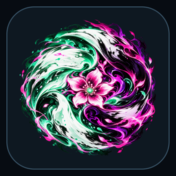

<!doctype html><html lang="en"><meta charset="utf-8"><script src="../shared/environment.js"></script><link rel="stylesheet" href="../shared/environment.css"><meta name="viewport" content="width=device-width"><title>Omni boot splash</title><link rel="stylesheet" href="tokens.css"><link rel="stylesheet" href="base.css"><link rel="stylesheet" href="splash.css" ><link rel="stylesheet" href="../shared/r4-focus.css"><script src="../shared/r4-focus.js" defer></script><link rel="stylesheet" href="../shared/r4-breadcrumbs.css"><script src="../shared/r4-route-data.js" defer></script><script src="../shared/r4-breadcrumbs.js" defer></script><link rel="stylesheet" href="/r4-shared/state-ui.css"><link rel="stylesheet" href="/r4-bindings/screen-bindings.css"><link rel="stylesheet" href="/r4-bindings/layout-skeletons.css"><script src="/r4-shared/copy.js" defer></script><script src="/r4-shared/state-core.js" defer></script><script src="/r4-shared/state-ui.js" defer></script><script src="/r4-bindings/configs/c8cea6fe88b8.js" defer></script><script src="/r4-bindings/layout-skeletons.js" defer></script><script src="/r4-bindings/profiles.js" defer></script><script src="/r4-bindings/loading-profiles.js" defer></script><script src="/r4-bindings/screen-bindings.js" defer></script><script src="/r4-bindings/source-init.js" data-source="outputs/omni-pages/bundle/splash/index.html" defer></script><main><nav class="ob-breadcrumb" data-ob-route-slot aria-label="Breadcrumb"></nav><h1>Omni</h1><p>Your next possibility is ready.</p><button id="replay" data-initial>Replay intro</button><div class="hints"><span><b data-glyph="accept">×</b> Select</span><button id="glyph-toggle" data-preview>PlayStation glyphs</button></div><div id="splash" aria-hidden="true"><div class="flower"><i></i><i></i><i></i><i></i><i></i></div><p>Omni</p></div></main><script src="controller.js"></script><script src="app.js"></script></html>